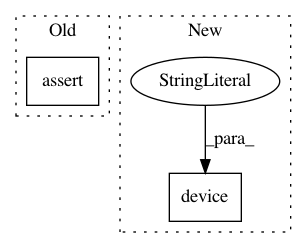

e302434106d43d9f38a0360211421bc468b9291d,test/test_functional_filtering.py,TestFunctionalFiltering,test_lfilter,#TestFunctionalFiltering#,32
Before Change
output_waveform = F.lfilter(waveform, a_coeffs, b_coeffs)
assert len(output_waveform.size()) == 2
assert output_waveform.size(0) == waveform.size(0)
assert output_waveform.size(1) == waveform.size(1)
def test_lowpass(self):
After Change
filepath = os.path.join(self.test_dirpath, "assets", "whitenoise.mp3")
waveform, _ = torchaudio.load(filepath, normalization=True)
self._test_lfilter(waveform, torch.device("cpu"))
def test_lfilter_gpu(self):
if torch.cuda.is_available():
In pattern: SUPERPATTERN
Frequency: 3
Non-data size: 2
Instances
Project Name: pytorch/audio
Commit Name: e302434106d43d9f38a0360211421bc468b9291d
Time: 2019-09-19
Author: engineerchuan@gmail.com
File Name: test/test_functional_filtering.py
Class Name: TestFunctionalFiltering
Method Name: test_lfilter
Project Name: pytorch/audio
Commit Name: e302434106d43d9f38a0360211421bc468b9291d
Time: 2019-09-19
Author: engineerchuan@gmail.com
File Name: test/test_functional_filtering.py
Class Name: TestFunctionalFiltering
Method Name: test_lfilter_basic
Project Name: dmlc/dgl
Commit Name: 8531ee6aa65eeeea9729e0442a150fcc7e629b35
Time: 2020-06-10
Author: classicxsong@gmail.com
File Name: examples/pytorch/deepwalk/deepwalk.py
Class Name: DeepwalkTrainer
Method Name: init_device_emb